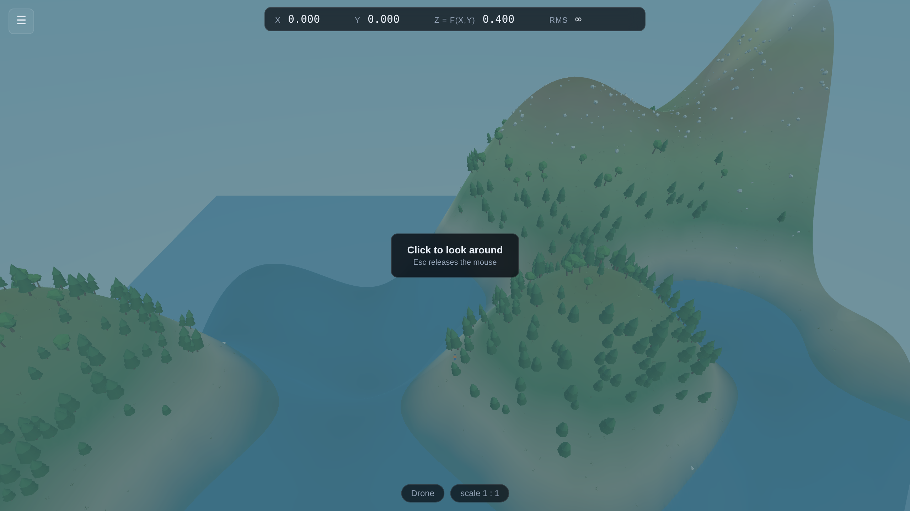
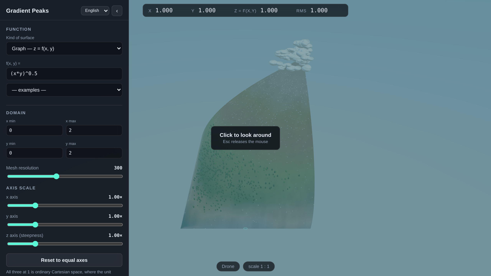
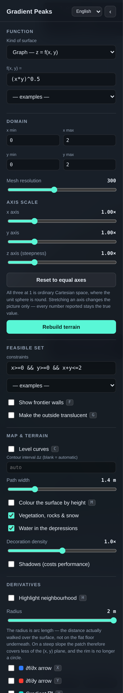
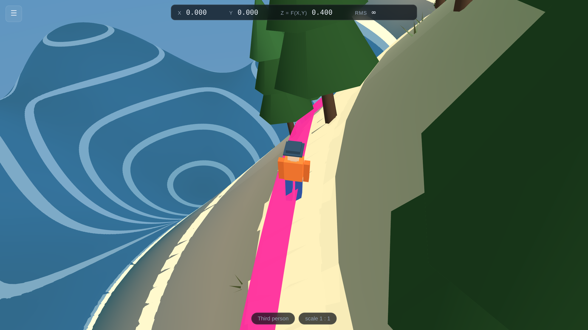
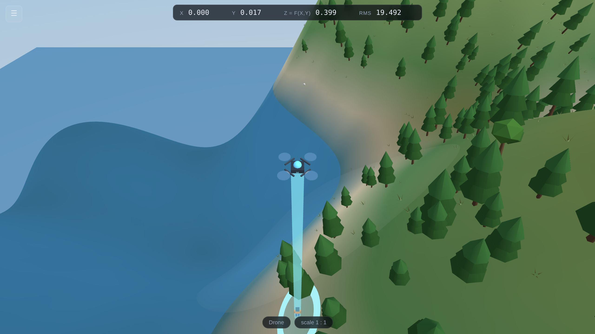
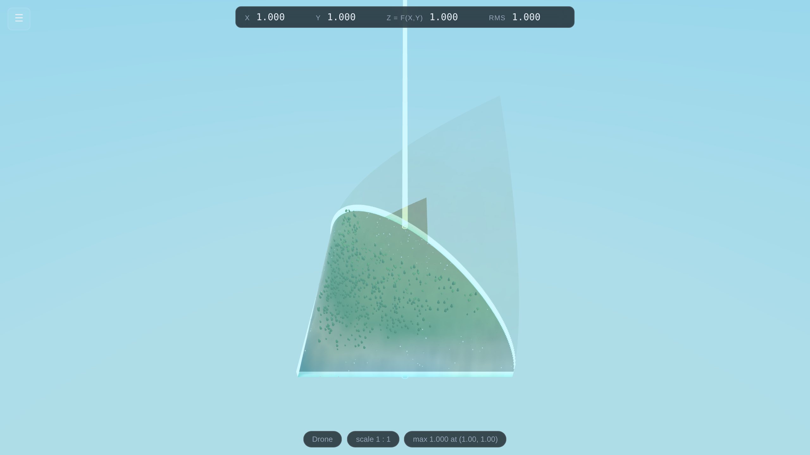
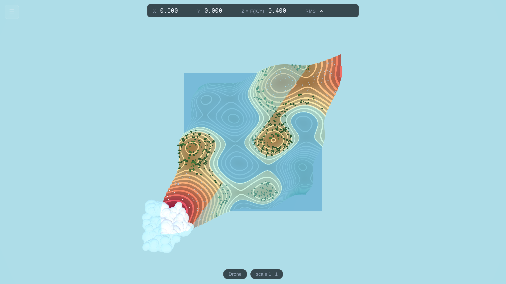
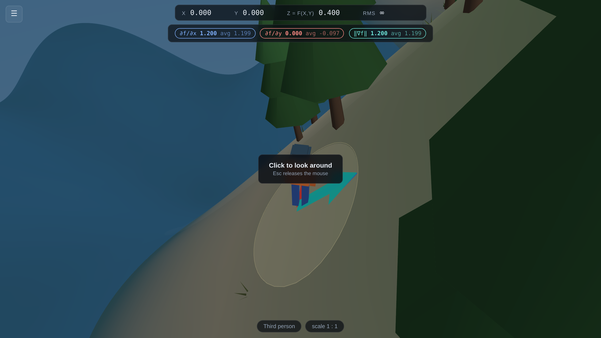
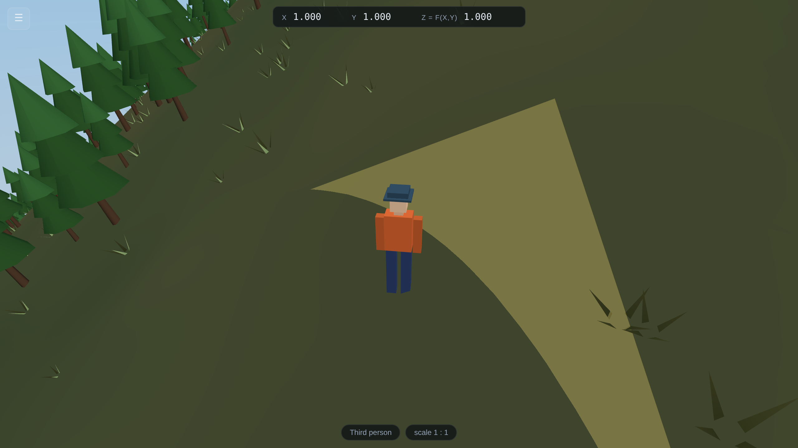
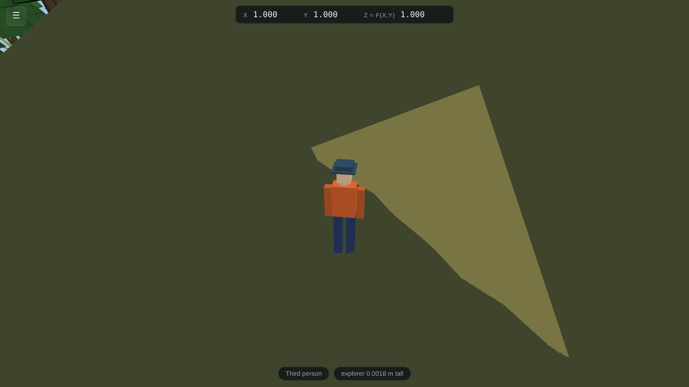

A 3D sandbox for surface plots of functions of two variables — walk on the graph of f(x, y), read its partial derivatives off the ground, and find the maximum over a feasible set.

Written for someone who has never installed or run a program like this before.
Every step is spelled out. Nothing here requires you to write code.
Version 1.0 · Runs on Windows, macOS, Linux, iPad, iPhone and Android · No installation required
Appendix A — Keyboard reference card (print this one page for the lab)
Appendix B — Every file you received, and what it does
You have been given a folder called Gradient-Peaks. If it arrived as a
.zip file, you must unzip it first — see the box below. Inside are
these items:
| Item | What it is |
|---|---|
Gradient-Peaks.html |
The program. Double-click it and it opens in your web browser and runs. This one file contains everything. It does not need the internet. |
Gradient-Peaks-Guide.pdf |
This document. |
website/ |
A folder holding the same program split into its separate parts. You only need this if you want to publish it on the internet for your students (Part 8) or install it as an app (Part 9). |
README.txt |
A one-page plain-text summary of what you are reading now. |
Double-clicking a .zip file often shows you the contents without actually
extracting them, and programs run from that preview will misbehave.
Windows: right-click the .zip → Extract All… → Extract.
macOS: double-click the .zip. A normal folder appears next to it.
Use that folder.
Gradient-Peaks.html.There is nothing to install, no account to create, and no internet connection needed.
The program is not "downloading" anything — it is drawing the mountain from the formula
f(x,y) = (x*y)^0.5, which you can see typed in the box at the top of the panel.
The program follows your browser: if that is set to Spanish, it opens in Spanish. You can switch at any time with the English / Español selector in the top corner of the control panel, without losing whatever you are in the middle of.
If you publish it to a web address (Part 8), adding ?lang=es to the end of the
link makes it open in Spanish for your students whatever their browser is set to — and
?lang=en forces English. A Spanish edition of this guide is included as
Gradient-Peaks-Guia.pdf.
Any modern browser works, but Google Chrome and Microsoft Edge
give the smoothest result. To choose one: right-click Gradient-Peaks.html →
Open with → pick your browser. On macOS the menu item is the same;
hold Control and click if you have no right mouse button.
Inside the website/ folder there is another file called index.html.
Double-clicking that one gives you a blank screen. That is not a fault. Browsers
refuse, for security reasons, to let a page opened directly from your hard drive load its
own separate program files. The single Gradient-Peaks.html avoids the problem by
having everything already inside it.
Use Gradient-Peaks.html on your own machine. Use the website/
folder only when you publish it to a web address (Part 8).
Almost certainly yes. The program needs a graphics feature called WebGL, which every browser has had since about 2013.
| You need | Details |
|---|---|
| A computer or phone | Roughly 2014 or later. It has been kept deliberately small — under one megabyte — so it runs on school laptops and cheap tablets. |
| A modern browser | Chrome, Edge, Firefox or Safari, updated within the last few years. |
| Nothing else | No internet, no Java, no Flash, no plug-in, no administrator password. |
Open Gradient-Peaks.html. If you see a mountain, you are done — that
is the test. If you see a blank or black screen instead, go to Part 10.
Because this is an ordinary web page, it does not trigger the software-installation
restrictions that lock down most institutional machines. There is no installer and no
.exe. If your students can open a web page, they can run this.

x, y, the height
z = f(x,y) and RMS. At the bottom, the current view mode and scale.
You begin in the air, looking at the whole surface.x and y are where the explorer is standing; z = f(x,y)
is the height there. The fourth, RMS, is the absolute slope of the
level curve through that point:
RMS = |∂f/∂x ÷ ∂f/∂y|
Differentiating f(x, y) = c implicitly gives dy/dx = −fx/fy
along the contour, so this number says how many units of y one unit of x
buys you while staying at the same height — the marginal rate of substitution. It is shown
unsigned, it is there whether or not any derivative arrow is switched on, and it goes to
∞ exactly where the level curve turns vertical (fy = 0). At a
critical point, where both partials vanish, it is genuinely undefined and shows a dash.
You start as a drone, hovering above the plot. This first view is deliberate: before you go down and stand on the surface, you should see it as what it is — the graph of a function.
Click once anywhere on the mountain. The message "Click to look around" disappears and your mouse pointer vanishes. This is normal and is exactly how a 3D game behaves: your mouse now turns your head instead of moving a pointer.
Move the mouse to look around. Press W A S D to fly. Press Space to rise and Ctrl to descend. Hold Shift to go faster.
Esc gives you your mouse pointer back. If you ever feel trapped, press Esc. Nothing is lost. Click the scene again to resume looking around.
Press 2. You drop onto the surface behind a small orange-jacketed explorer, who is exactly 1.80 metres tall. That figure is the ruler for everything else in the scene: the trees, the boulders, and the measuring circle you will meet in a moment are all sized against a person.
Walk with W A S D. Watch the numbers along the top
change as you move. That readout is the whole point of walking: the student feels
the slope in their hands while watching z climb.
Press 1 to see through the explorer's own eyes, 3 to go back to the drone, and 2 to return to the over-the-shoulder view.
Press Esc to release the mouse, then press Tab to hide or show the control panel. You can also click the ‹ button in its top corner, or the ☰ button that replaces it.
When your cursor is inside a text box, the letter keys type letters — they do not trigger
shortcuts. So typing x*y will not accidentally toggle three settings. Press
Enter when you have finished typing to apply what you wrote and leave the box.

The selector beside the panel title switches the whole interface between English and Español — including the error messages the parser produces. Nothing is recomputed, so you can switch mid-demonstration.
Kind of surface — three of them, and only the first is a landscape you can walk on.
(x, y),
or none, so there is nothing to walk on and no ∂f/∂x; fly around it with the drone.f(x, y) = — the formula that becomes the landscape. Type a new one
and press Enter. Part 5 explains the notation in full.
— examples — — a menu of ready-made functions. Choosing one loads it and sets a sensible domain. This is the fastest way to explore.
If what you type does not make sense, a red message appears underneath naming the problem and the character where it went wrong. The mountain you already had stays on screen — a typing mistake never destroys your work.
x min, x max, y min, y max — the rectangle of the plane you are plotting over. The default is the square from 0 to 2 in both directions.
Mesh resolution — how finely the surface is divided into triangles. Higher is smoother but slower to build. 300 is the default; lower it to 100 or 80 on an old computer.
Axis scale — x axis, y axis, z axis — three dials, all at
1.00× by default. That default is ordinary Cartesian space, where one unit of
x, one unit of y and one unit of z are the same length and
the unit sphere really is round. Leave all three at 1.0 for teaching. Stretching
one changes the picture only: every number on screen stays the true, unstretched value, which is
exactly the sort of mismatch that confuses students. The z dial exists for functions
so flat you cannot otherwise see them, and the x and y dials for domains
far longer than they are wide. Reset to equal axes puts all three back to 1.
Rebuild terrain — applies the function and domain. Pressing Enter in any of the boxes does the same thing.
constraints — the inequalities that define where the student is allowed to look for the maximum. Part 6 covers the notation.
Show frontier walls F — draws glowing walls along the border of the feasible region, standing on the surface. This is the "frontier of the country".
Make the outside translucent G — everything outside the feasible set fades to a ghost, so only the permitted region is solid. Turning both of these on is the clearest way to pose a constrained optimisation problem.
Level curves C — draws the contours on the surface as wide, walkable paths rather than hairlines, and drapes them over the ground: the centre of each path is at constant height, as a level curve must be, but the band itself follows the hillside it crosses instead of hanging in the air as a flat ring. Each path is coloured by its own height on the ten-colour ramp, so the colour states the altitude whether or not the surface itself is coloured.
Contour interval Δz — leave it blank and the program picks a round interval and shows you which one. Type a number and that is the interval, which is the point when the interval is the thing being taught. Ask for one so small that thousands of paths would be needed and it is widened, with a note saying so.
Path width — how wide those paths are, in metres, against the 1.80 m explorer. The default 1.4 m is a footpath you can see from the air and still walk along.
Colour the surface by height M — repaints the whole surface on the same ten-colour ramp the contours use, so the surface and its level curves agree. Turn it off and the surface goes back to the eight terrain bands — water, beach, deep vegetation, lighter vegetation, arid, volcanic rock, snow, cloud — which say the same thing in the language of a landscape. Combine either with T (look straight down) to turn the 3D scene into the flat map students already know.
Vegetation, rocks & snow — turns the scenery on and off. The scenery sits on top of the surface and never changes its shape.
Water in the depressions — a translucent lake surface at height zero, so any
region where f < 0 fills with water.
Decoration density — how much scenery. Turn it down to speed things up.
Shadows — prettier, noticeably slower. Off by default.
Highlight neighbourhood H — lights up a disc on the surface centred on the explorer. This is the neighbourhood in which all the rates of change are measured.
Radius — 1 metre or 2 metres, measured against the 1.80 m explorer, and
measured as arc length over the surface: it is the distance actually walked from
where the explorer stands, not the distance on the flat floor underneath. On level ground the two
agree. On a slope of 1 you cover 2 m of ground in only 1.41 m of floor, so the patch shrinks in
the (x, y) plane — and on a surface whose steepness varies with direction the rim
stops being a circle at all. That is the honest local neighbourhood: the set of points two metres'
walk away, exactly as a Riemannian metric measures it.
∂f/∂x arrow X —
a blue arrow drawn along the surface in the direction of increasing x.
∂f/∂y arrow Y —
the same in red, for increasing y.
Gradient ∇f V — in teal and at double width, pointing in the steepest uphill direction.
Each one adds a badge to the top of the screen showing two numbers: the instantaneous derivative at the explorer's feet, and the average rate of change over the radius of the disc. Watching those two numbers converge as you shrink the radius is a lesson in itself.
Directional derivative B — freezes the explorer and lets you swing a direction vector u around the rim with the mouse. The badge shows Duf and the angle. To look around while in this mode, hold the right mouse button.
All four arrows are painted on the surface and reach the same arc length, so on a hillside they bend with the hillside; each ends in a flat arrowhead, proportioned to the width of its own shaft.
Level curve you are standing on J — traces the contour through the explorer's exact height, not the nearest round one, and re-traces it continuously as they walk. It is coloured by that height on the ramp, and laid on the surface like the other paths.

Tangent line to that curve K — the tangent to that contour at the
explorer's feet, in magenta, projected down onto the surface so that it hugs the ground rather
than floating off it. Because a level curve keeps f constant, its tangent direction
is perpendicular to ∇f, and the projected line leaves the contour only at second
order: the two run together near the explorer and part slowly further out. Shrink the explorer
with the zoom dial and they close up again — which is what "tangent" means.
Tangent plane P — draws the flat plane that best matches the surface at the explorer's feet.
Shrinks the explorer by a factor of ten per notch: 1.8 m, then 18 cm, 1.8 cm, 1.8 mm, and finally 0.18 mm. The camera, the walking speed and the measuring disc all shrink with them, so from the explorer's point of view nothing changes — but the patch of surface they occupy gets a hundred, a thousand, ten thousand times smaller. Activity 8 in Part 7 explains why this matters.
Show optimum O — finds the highest point of the surface within the feasible set and marks it with a golden ring and a shaft of light you can see from anywhere. The report underneath gives the maximum value, where it is, whether it sits in the interior or on the boundary, and the size of the gradient there.
Teleport to the optimum — puts the explorer on that spot instantly.
Three ways of being in the scene.
Drone camera — visible only in drone mode, and offering the same choice again one level up: first person puts you in the aircraft, third person puts the camera behind it so you can see the drone itself.

z = 0, and the bright ring where it lands is the
point of the domain the drone is over — here, still the spot the explorer took off from.The drone flies level. W A S D move it over the
(x, y) plane, Space and Ctrl set its altitude, and the mouse
only aims the camera — so you can look straight down at the ground and still cross the domain at a
constant height, which a camera that dives wherever it is pointed makes very hard. Hanging beneath
it is a bright beam, perpendicular to the plane z = 0, ending in a bright ring on the
surface: that ring is the point of the domain you are above, and watching it is how you keep track
of where you are while flying.
Explorer's look — hiker, brick minifigure, blocky pixel figure or round buddy. All four are exactly 1.80 m tall, so the scale reference never changes.
Look straight down T flies the drone directly overhead, which
projects the surface onto the plane z = 0 — the flat map view.
Return to the centre R rescues an explorer who has wandered off.
Type into the f(x, y) = box and press Enter. The notation is the ordinary
one you would use in a calculator or a spreadsheet, with two conveniences added.
| Symbol | Meaning | Example |
|---|---|---|
+ - * / | add, subtract, multiply, divide | x/2 - y |
^ | raise to a power | x^2, x^0.5, x^-1 |
( ) | grouping | (x+y)^2 |
| | | absolute value | |x-y| |
pi, e | the usual constants | sin(pi*x) |
You may leave out the multiplication sign. 2x means
2*x, x y means x*y, and 3(x+y) means
3*(x+y).
Powers bind tightest. -x^2 is -(x^2), not
(-x)^2 — the same convention as in your lecture notes.
sin cos tan asin acos
atan atan2 sinh cosh tanh
exp ln log log2 log10
sqrt cbrt abs sign floor
ceil round min max pow
hypot mod clamp step gauss
hypot(a,b) is sqrt(a^2+b^2). gauss(t) is the bell curve
e^(-t²/2); gauss(t, centre, width) shifts and stretches it.
| Type this | You get |
|---|---|
(x*y)^0.5 | The Cobb–Douglas surface. Undefined unless x and y are both positive or both negative. |
x^0.3*y^0.7 | Cobb–Douglas with unequal shares. |
1-x^2-y^2 | A dome. One clean interior maximum at the origin. |
x^2-y^2 | A saddle. Useful for showing a point where the gradient vanishes but there is no maximum. |
sin(3x)*cos(3y)/2 | An egg carton: many local maxima. |
0.6*sin(2x)+0.4*cos(3y)+0.3*x*y | Rolling hills with lakes. The prettiest one to walk in. |
-(x^2+y^2)^0.5+1 | A cone. The tip is a maximum where the function is not differentiable — see Activity 8. |
x*y*exp(-(x^2+y^2)) | Four alternating peaks and troughs. |
| You type | You see | The fix |
|---|---|---|
sin(x | Missing ")" after sin( (at character 6) | Close the bracket. |
x*yy | Unknown name "yy" (at character 3) | Only x and y are variables. |
2+ | Unexpected end of expression | Something is missing after the +. |
sin | "sin" is a function — write sin(...) | Give it an argument. |
(x*y)^0.5 has no real value when x and y have opposite
signs. Plot it over a domain that crosses the axes and two quadrants come out empty —
and the explorer will not walk into them. A note appears at the bottom of the screen telling you
what fraction of the domain is undefined. This is not a bug to be worked around; it is a
genuinely useful picture of a function's domain.
The constraints box takes inequalities in x and y. Whatever
satisfies them is the feasible set — the region in which the maximum must be found.
| Symbol | Meaning |
|---|---|
<= >= | less than or equal, greater than or equal |
< > | strictly less, strictly greater |
&& | and — both conditions must hold |
|| | or — either will do |
! | not |
You may chain comparisons the way you would write them by hand: 0 <= x <= 1
means exactly what it looks like. Leaving the box empty means "no constraint at all".
| Type this | You get |
|---|---|
x>=0 && y>=0 && x+y<=2 | A triangle — the classic budget set. |
x^2+y^2<=1 | A disc of radius 1. |
x+y<=2 && 2x+y<=3 && x>=0 && y>=0 | Two budget lines at once: a four-sided region. |
x*y>=0.3 && x+y<=2.5 | A curved constraint against a straight one. |
0<=x<=1.5 && 0<=y<=1.5 | A rectangle, written with chained comparisons. |

x>=0 && y>=0 && x+y<=2 with both feasible-set
switches on. The permitted triangle is solid ground with its scenery; everything outside has
faded to a ghost. The shaft of light marks the constrained maximum.One for each feature. Each takes five to ten minutes and ends with something the students can state in words.
Set up: the program as it opens.
Do: Look at the surface from the drone. Press 2 and walk uphill. Ask the
class to call out what z is doing as you climb, and then to say what
z is.
The point: the height of the ground under your feet is the value of the function at the point you are standing on. Everything else in the course is a statement about this landscape.
Do: From the air, note that the mountain looks perfectly smooth. Now turn Vegetation, rocks & snow off and on.
The point: The trees and boulders are placed on the surface; they never change its shape. A differentiable function has no corners no matter how close you look — but real mountains are covered in things that do. Being able to separate the two is worth a minute of discussion.
Set up: constraints x>=0 && y>=0 && x+y<=2.
Turn on Show frontier walls and Make the outside translucent.
Do: Walk to the wall and try to see over it. Ask: where on this triangle is the ground highest?
The point: A constrained optimisation problem is a question about a region, not about a formula. Students who can see the region rarely get the geometry wrong afterwards.
Do: Switch between 1, 2 and 3, then press T to look straight down.
The point: The top-down view is the flat picture in the textbook. Showing students that it is the same object seen from above dissolves a surprising amount of confusion about contour diagrams.
Set up: turn on Level curves C and Topographic colours M.
Do: Stand on a contour line and walk along it, watching z in the
readout. Then walk across the lines and watch it change quickly.
The point: A level curve is where the function does not change. Walking one and watching the number hold still makes that concrete. Press T afterwards and the same lines become an ordinary contour map.

Set up: f(x,y) = (x*y)^0.5. Turn on
∂f/∂x X, ∂f/∂y Y and
Gradient V. Walk to roughly (1, 1).
Do: Read the three badges. At (1,1) they say ∂f/∂x = 0.500,
∂f/∂y = 0.500, ‖∇f‖ = 0.707. Check by hand: the partial derivatives of
√(xy) at (1,1) are both ½, and √(¼+¼) = 0.707.
Then: point out that the teal gradient arrow sits exactly between the blue and red ones, and that it is the steepest way up. Walk to a different point and watch all three swing round.
The point: the gradient is not an algebraic accident, it is a direction you can see and walk in.

Set up: turn on Directional derivative B.
Do: The explorer freezes. Swing the mouse slowly and watch Duf in the badge. Find the direction where it is largest — it lands on the gradient. Find where it is zero.
The point: The direction of zero directional derivative is the level curve, at right angles to the gradient. Students usually learn that as a formula; here they find it by hand in about fifteen seconds.
Set up: turn on Tangent plane P. Leave the zoom ruler at 1:1.
Do: Note that the yellow plane matches the surface underfoot but peels away from it a few metres out. Now drag the Zoom-in ruler one notch at a time and watch what happens.
The point: by 1:1000 the surface and its tangent plane are indistinguishable. That
is differentiability: not a formula, but the fact that a small enough piece of the surface is a
plane. Follow it with the cone -(x^2+y^2)^0.5+1 and zoom in on the tip — it stays a point
however far you go. That is what a non-differentiable point looks like.


Set up: f(x,y) = (x*y)^0.5, constraints
x>=0 && y>=0 && x+y<=2, Show frontier walls on,
Show optimum O on.
Do: Read the report. It says the maximum is 1.0000 at
(1.0000, 1.0000), that it lies on the boundary of the feasible set, and that
‖∇f‖ there is 0.7071 — not zero. Teleport there, turn on the gradient
arrow, and see it pointing straight at the wall.
Then: switch the feasible set off and press O again. The maximum jumps to the far corner of the domain.
The point — and it is the reason this program exists: at an unconstrained maximum the ground goes flat and the gradient dies. At a constrained maximum it need not: the ground is still climbing, and what stops you is the border. Students who have stood at that spot and seen the gradient arrow jammed against the wall do not later write "set the gradient to zero" on a constrained problem.
Set up: f(x,y) = (x*y)^0.5 over [0,2]²,
Level curve you are standing on J on, its
tangent line K on, third person.
Do: Watch the RMS figure at the top while you walk along the
contour you are standing on. It does not move: a level curve of
f = (xy)1/2 is a rectangular hyperbola xy = c, and on it
RMS = |y/x|, which is the slope of the ray you are walking around, not of the path
under your feet. Now walk across the contours instead, straight up the gradient, and it
still barely moves — for this function the rate depends only on the ratio y/x.
Then: go to the point (1, 1). RMS = 1: one unit of
x substitutes for exactly one unit of y. Walk to where x is
four times y and it reads 0.25. Ask the class to predict the reading
before each move.
The point: the marginal rate of substitution is not an extra formula bolted on to the derivatives — it is the slope of the indifference curve, and the indifference curve is a path the student has just walked along. At the constrained optimum of Activity 9, that number equals the price ratio, and both are visible in the same frame: the tangent to the level curve and the frontier wall lie flat against each other.
Four ways, easiest first. Option A needs nothing at all; option D gives you a permanent web address. All four are free.
Email Gradient-Peaks.html as an attachment, or drop it in your course folder,
or put it on a USB stick. Students double-click it. That is the whole procedure.
Some mail systems strip or block .html attachments. If it does not arrive, put the
file in a shared drive (OneDrive, Google Drive, Dropbox) and send the link instead — but tell
students to download it and then open it, not to preview it in the browser, since
some drive previewers will show the file's text rather than run it.
Moodle, Canvas, Blackboard and their relatives all accept a file upload. Add
Gradient-Peaks.html as a resource. Students click it and it runs.
This gives you a link you can put on a slide. No account is needed to start.
app.netlify.com/drop in your browser.website folder — the whole folder, not the files inside
it — onto the dashed box on that page.https://cheerful-lion-12ab34.netlify.app.Create a free account within 24 hours if you want to keep the address permanently or give it a friendlier name.
More steps, but the address never expires and updating it later is easy. If the project already lives in a GitHub repository:
github.com..github/workflows/pages.yml) publishes
the app/ folder automatically on every push to the main branch.https://<your-username>.github.io/<repository>/.For options C and D you publish the website/ folder, because a real
web server can serve its separate files correctly. Option A and B use the single
Gradient-Peaks.html instead. Both contain the same program.
Once the program is at a web address (options C or D above), it can be installed like an app — its own icon, its own window, no browser bar, and it works offline afterwards. There is no app store involved, no payment, and no developer account.
| Device | How |
|---|---|
| iPhone / iPad | Open the address in Safari (this does not work in Chrome on iOS). Tap the Share button — the square with an arrow — then scroll down and tap Add to Home Screen. |
| Android | Open the address in Chrome. Tap the three-dot menu, then Install app or Add to Home screen. |
| Windows | Open in Chrome or Edge. Click the small install icon at the right-hand end of the address bar (a monitor with an arrow), then Install. |
| macOS | In Chrome or Edge, the same install icon. In Safari, choose File → Add to Dock. |
After installing, the program keeps a copy of itself on the device. Students can use it on the bus with no signal.
| What you see | Why | What to do |
|---|---|---|
A blank white or black page, and you opened website/index.html |
Browsers will not let a page opened from your hard drive load its own separate files. | Open Gradient-Peaks.html instead. That is what it is for. |
| Stuck on "Building the terrain…" for more than about 20 seconds | The mesh resolution is too high for this computer, or the function is very slow to evaluate. | Reload the page. Drag Mesh resolution down to 100 before changing anything else. |
| The mouse pointer disappeared and you cannot click anything | Nothing is wrong — the program has taken the mouse so it can turn your head. | Press Esc. |
| Typing in the function box toggles settings | Your cursor is not actually inside the box. | Click directly into the box first. While it holds the cursor, letters type normally. |
| A red message under the function box | The formula could not be read. The message names the character where it failed. | See the mistakes table in Part 5. The previous landscape is still on screen and still usable. |
| Large parts of the terrain are missing | The function has no real value there — for instance sqrt of a negative number. |
Nothing to fix. Change the domain if you want a complete surface; the note at the bottom of the screen tells you how much is undefined. |
| Everything is jerky | The computer's graphics are struggling. | Part 11, in the order given there. |
| The explorer will not move | Directional derivative is on. It freezes the explorer on purpose. | Turn it off with B. |
| The screen is filled with a solid colour | The camera is inside the terrain or hard against a frontier wall. | Press R to return to the centre, or 3 to fly out as the drone. |
| "WebGL is not available" or similar | Hardware graphics are switched off in the browser. | In Chrome or Edge: Settings → System → turn on Use graphics acceleration when available, then restart the browser. On very locked-down machines, ask IT. |
Change these in order and stop as soon as it feels smooth. The first two cost you almost nothing.
Every setting in this part changes only how the landscape is drawn. The derivatives, the gradient and the optimum are computed from the formula itself, so the numbers on screen are identical at the lowest settings and the highest.
For colleagues and for IT departments who want to know what they are being asked to allow.
No installer, no background service, no administrator rights. It never sends anything anywhere: it has no network code at all beyond loading its own files. Nothing is collected, stored or transmitted.
The formula box is read by a purpose-built mathematical parser. It can produce a number and nothing
else — there is no eval anywhere in the program. A student cannot type something into the
function box that makes the program do anything other than draw a surface.
All three axis scales start at 1, so one unit of x, of y and of
z are the same length and the slope you see is the slope the program reports.
(Moving any of the three dials deliberately breaks that, which is why they are labelled as
picture-only and start at 1.) The neighbourhood, and every arrow drawn in it, is measured as arc
length over the surface — the length the ambient metric assigns to the path — while the
derivatives reported are the ordinary partial derivatives, unaffected. The optimum is found by
scanning the feasible set and then refining the best candidates, and every trial point must
satisfy the constraints — which is why a boundary maximum is found correctly.
The program is released under the MIT licence: use it, change it, and give it to your students
freely. It uses one external library, three.js (also MIT, © three.js authors), whose
licence text travels with the files in website/vendor/.
One page. Print it and leave it next to the projector.
| Key | Does |
|---|---|
| W A S D | Walk or fly |
| Shift | Hold to move faster |
| Space / Ctrl | Drone altitude, up / down |
| mouse | Look around (click the scene first) |
| Esc | Release the mouse pointer |
| Tab | Hide or show the control panel |
| 1 / 2 / 3 | First person / third person / drone |
| T | Look straight down (map view) |
| R | Return to the centre |
| C | Level curves |
| M | Colour the surface by height |
| J | The level curve you are standing on |
| K | Its tangent line, projected on the surface |
| F | Frontier walls of the feasible set |
| G | Make everything outside translucent |
| H | Highlight the neighbourhood disc |
| X | ∂f/∂x arrow |
| Y | ∂f/∂y arrow |
| V | Gradient ∇f |
| B | Directional derivative (freezes the explorer) |
| P | Tangent plane |
| O | Show the optimum |
| Enter | In a text box: apply what you typed |
On a phone or tablet: drag on the left half of the screen to walk, drag on the right half to look around.
| File | What it does |
|---|---|
Gradient-Peaks.html | The whole program in one file. Double-click to run. |
Gradient-Peaks-Guide.pdf | This guide. |
README.txt / LEEME.txt | A one-page summary, in English and Spanish. |
website/js/i18n.js | The English and Spanish text, and the language switch. |
website/index.html | The page structure and the control panel. |
website/css/style.css | How the panel and readouts look. |
website/js/mathexpr.js | Reads what you type into a mathematical expression. |
website/js/field.js | Converts between mathematical coordinates and metres; computes gradients. |
website/js/terrain.js | Builds the surface, its colours, the water and the frontier walls. |
website/js/decor.js | Scatters the trees, rocks, grass and snow. |
website/js/analysis.js | Level curves, derivative arrows, tangent plane, and the optimiser. |
website/js/player.js | The explorer, the drone, and the three cameras. |
website/js/main.js | Puts the scene together and wires up the controls. |
website/vendor/ | three.js, the 3D graphics library, with its licence. |
website/sw.js | Lets an installed copy work offline. |
website/manifest.webmanifest | Tells a phone the name and icon to use when installing. |
tools/build-standalone.mjs | Optional. Rebuilds Gradient-Peaks.html if you change the source. |
Gradient Peaks — built for teaching the geometry of functions of two variables.
Everything in this guide was checked against the running program.